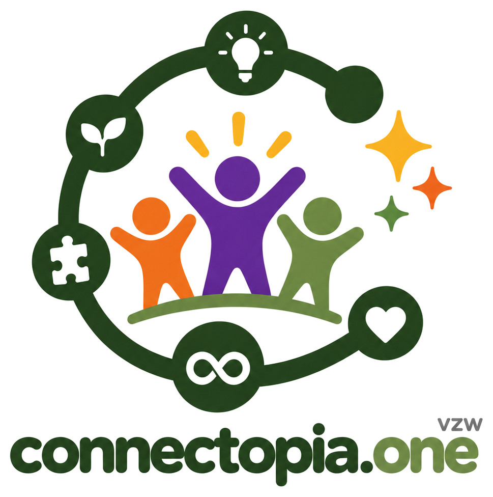
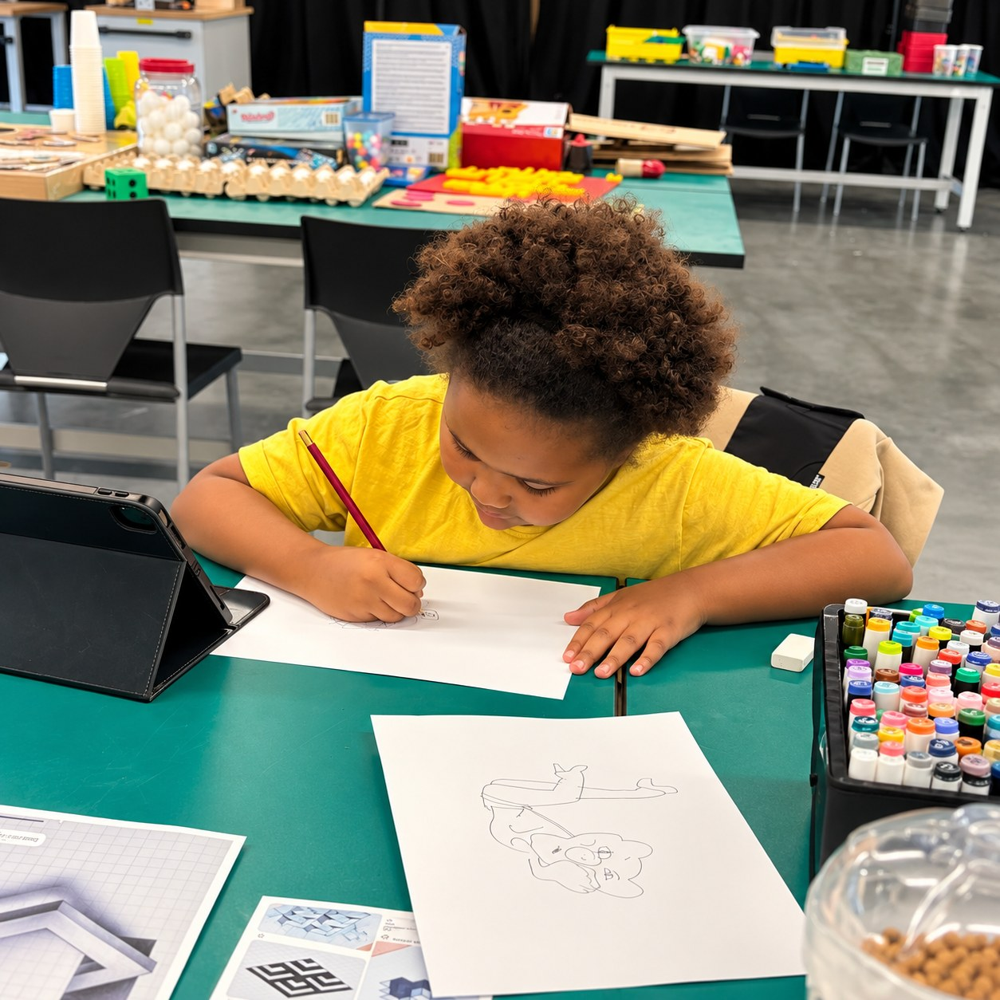
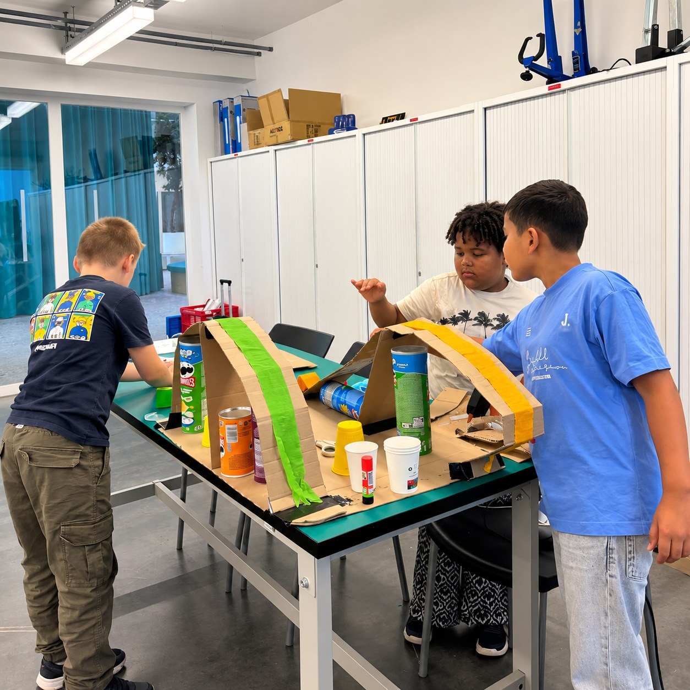
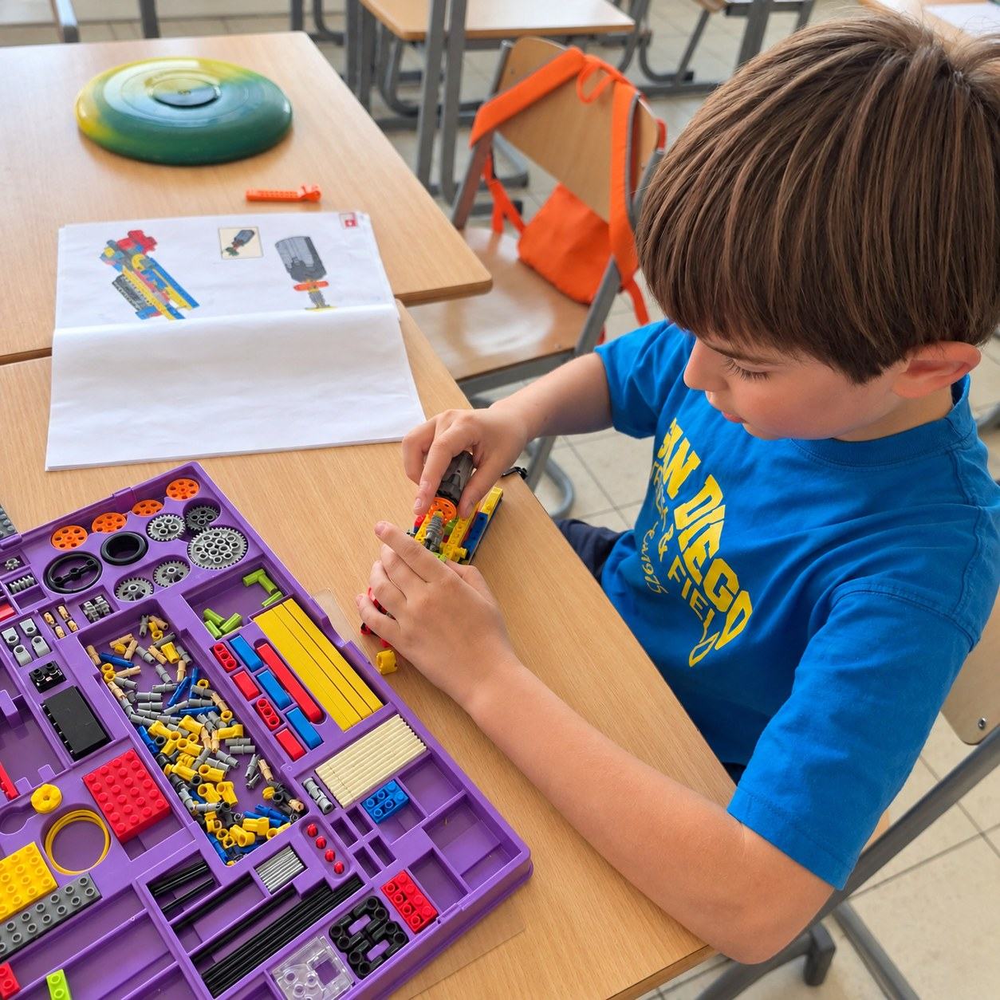

Voor nieuwsgierige koppen van 6 tot 12 jaar
Ruimte voor nieuwsgierigheid,
talent en uitdaging
Connectopia vzw begeleidt kinderen die meer uitdaging, begrip of ruimte nodig hebben, in Hasselt en in Genk. Kom gerust eerst een keertje gratis meedoen.

Wat er dit schooljaar te doen is

Externe plusklas
- Dinsdag, 9u – 15u
- Atheneum Hasselt, Kleine-Breemstraat 33
€50 per dag €60

Pluswerking woensdag
- Woensdagvoormiddag, 9u – 12u
- T2 Campus, Thor Park 8040, Genk
€25 per 3 uur €30

Pluswerking zaterdag
- Zaterdagvoormiddag, 9u – 12u
- Level X 28, Vilderstraat 28, Hasselt
€25 per 3 uur €30

Young Engineers
- Dinsdag, woensdag of zaterdag
- Hasselt of Genk, één les duurt 1u15
€20 per les €25
Kennis en ervaring met HB en UHB
●
inclusief
●
prikkelarm
●
kleine groepen
In elke schoolvakantie
Vakantiekampen met uitdaging
- Elke dag van 9u tot 15u, €40 per dag
- Voor 6 tot 12 jaar, in Hasselt of in Genk
Eerstvolgend: 2 tot 5 november en de kerstvakantie. Alle datums staan op de website.
Waarom we dit doen
Ik ben Kim
Mama van vier kinderen met heel verschillende talenten en uitdagingen: van hoogbegaafdheid (HB en UHB) en ASS of ADHD tot fysieke en medische zorg. Elke zoektocht naar begeleiding was een reis. Daarom bestaat Connectopia: jouw zoektocht mag korter zijn, minder eenzaam en met meer houvast.
Ervaringsdeskundige ouders met een pedagogische achtergrond. Wij stellen geen diagnoses en geven geen therapie.